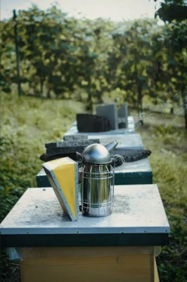

A Year in the Apiary - May Beekeeping Tasks (UK)
May is one of the busiest and most exciting months in the UK beekeeping calendar. Colonies can grow rapidly, nectar flows improve and swarm pressure rises. Weekly inspections, space management and clear records all become essential if you want healthy bees and a good honey crop.
This guide builds on the work done in March and April and forms part of the BeezKnees Year in the Apiary – monthly beekeeping calendar. It focuses on practical May beekeeping tasks in the UK, with an emphasis on swarm control, adding supers and keeping up with rapidly expanding colonies.
May at a Glance – Peak Spring Growth
Bee Behaviour
- Rapid build-up of brood and adult bees
- Strong foraging on oilseed rape and other spring flows
- Increased drone population and swarm impulse
Key Jobs for the Beekeeper
- Weekly inspections when weather allows
- Implementing swarm control when queen cells appear
- Adding and managing supers for expanding colonies
Risks to Watch
- Losing swarms between inspections
- Congested brood nests with insufficient space
- Neglecting records during the busy period
What Your Bees Are Doing in May

In many parts of the UK, May marks the main spring flow. Colonies that built up during April now have large brood nests and growing foraging forces. Bees may work oilseed rape, fruit blossom and a wide range of hedgerow and garden plants, depending on your location.
With this rapid expansion comes an increased risk of swarming if colonies feel cramped or if older queens are determined to reproduce. Your task is to balance giving the bees enough space with regular checks for queen cells, without over-handling the brood on cooler or unsettled days.
Weekly Hive Inspections – Staying Ahead

In May, most beekeepers aim for inspections roughly every 7 days, and in some high-swarm areas a little more frequently if time and weather permit. The aim is to keep a close eye on queen cells, brood pattern, stores and overall colony mood.
- Confirm the colony is queenright – look for eggs and young larvae.
- Assess brood pattern and coverage – compact, healthy brood is a good sign.
- Look carefully along frame bottoms and edges for charged queen cells.
- Check that there is enough space for both brood and nectar – congested colonies are more prone to swarm.
- Keep an eye on temperament and note any sudden changes in behaviour.
You can find general inspection advice and handling tips in the hive management guide.
Swarm Prevention and Control in May
May is prime swarm season in many parts of the UK. Your inspections are now focused not just on health and stores, but on identifying and acting on queen cells in a controlled way. Having a clear swarm control method and the required equipment ready before queen cells appear makes life much easier.
- Decide which swarm control method(s) you understand and are able to implement – for example, artificial swarm or nucleus splits.
- Ensure you have spare floors, brood boxes and frames ready before you need them.
- Keep good notes on which colonies show strong queen cell activity and when.
When queen cells are found, it is important not to panic. Follow your chosen method carefully and record exactly what you did. This will help you follow up on subsequent inspections and review what worked well.
Adding Supers and Managing the Nectar Flow
During strong flows, bees can fill a super surprisingly quickly. Adding and managing supers in May helps prevent congestion and gives colonies room to store nectar and ripen honey.
- Add a super when bees are working most brood frames and nectar is coming in steadily.
- Drawn comb is ideal; if you are using foundation, be patient and ensure bees are strong enough to work it.
- Monitor how quickly supers fill and note any sudden slow-downs, which may indicate an end to a major flow.
For tips on handling supers, extracting and equipment choices, visit the equipment guide.
Replacing Frames and Managing Comb
May is a practical time to continue gradual comb replacement, especially if you have drawn brood frames ready. Replacing a portion of old comb each year helps reduce residue build-up and supports colony health.
- Aim to change a proportion of older frames each season – for example, 10–20% depending on your system.
- Consider building up a stock of drawn brood frames by allowing bees to draw foundation in a temporary second brood box.
- Store drawn comb carefully to protect it from wax moth and other pests.
More on comb hygiene and cleaning equipment can be found in the hygiene guide.
Queen Management and Possible Queen Rearing
May is a natural time to review queen performance. Colonies are showing what they can do under good conditions, so you can begin to identify which queens you might want to keep, replace or use for queen rearing later.
- Note colonies with excellent brood patterns, calm behaviour and good productivity – these may be candidates for breeding.
- Pay attention to colonies that are consistently difficult to handle or under-perform, even in favourable conditions.
- If you are interested in queen rearing, May and June often offer suitable conditions for mating flights.
Local association groups and more advanced texts can provide step-by-step queen rearing methods if you decide to explore this area further.
Checking Stores – Still Watching for Starvation
While May often brings good forage, it is still possible for colonies to become short of stores if the weather turns poor or a strong flow ends suddenly. Rapidly growing colonies consume a lot of food to maintain brood and adult bees.
- Continue to heft hives regularly between inspections.
- During inspections, check for sealed honey and nectar around and above the brood.
- Be prepared to respond quickly if a colony that was heavy last week feels surprisingly light this week.
Record Keeping, HiveTag and Learning from the Season
May can feel hectic. It is exactly at these busy times that clear, concise records become most valuable. Recording what you did and what you saw makes it much easier to review the season later and improve your decisions.
- Inspection dates and weather conditions.
- Notes on queen cells and any swarm control carried out.
- Dates when supers were added, moved or removed and how quickly they filled.
- Any comb replacement or major equipment changes.
Digital tools such as the HiveTag web app can make it easier to log these details against each hive, especially when you have multiple apiaries or a busy schedule.
May is also a good time to keep learning – through local association meetings, study groups and trusted reading. Revisiting the guides on getting started and honeybee behaviour can help you interpret what you see on the frames with fresh eyes.
Forage and Helping Pollinators in May
May often brings a rich mix of forage: oilseed rape in some regions, fruit trees, hawthorn, horse chestnut and many garden plants. Supporting this abundance helps honey bees and a wide range of wild pollinators.
- Maintain and extend flower-rich areas in gardens and local spaces.
- Avoid using insecticides and herbicides that can harm bees and other insects.
- Provide clean water sources such as shallow dishes with pebbles or floating landing spots.
For more ideas, see the bee gardening guide and the wider Help the Bees section.
Emergency Scenarios – When Things Go Wrong in May
- Sudden loss of a queen during swarm control operations or manipulations.
- Missing a swarm between inspections and discovering a very depleted colony.
- Rapid changes in colony strength that may indicate disease or queen failure.
When serious issues arise, seek advice quickly – from experienced mentors, your local association or the National Bee Unit. The pages on bee diseases and bee stings and safety provide helpful background information for managing difficult situations safely.
May Beekeeping FAQ – UK Beekeepers
How often should I inspect my hives in May?
Many beekeepers aim to inspect every 7 days in May, with more frequent checks if swarm pressure is high and time allows. Regular inspections help you catch queen cells early and keep on top of space and stores.
What is the main focus of May inspections?
The main focus is on swarm control, queen performance, brood health and space management. You are looking for eggs and brood, charged queen cells, congestion and any signs of disease or stress.
When should I add supers in May?
Add supers when colonies are strong and working most brood frames and nectar is coming in steadily. Adding supers slightly early is usually better than waiting until bees are crowded and swarm pressure is high.
Can I still replace old brood frames in May?
Yes. As long as colonies remain strong, you can continue planned frame replacement. Make changes gradually and avoid removing too much brood or stores in one go.
What should I do if I find queen cells?
First, record what you see. Then apply your chosen swarm control method calmly and consistently. Having read up and prepared equipment in advance makes this much easier.
How can I reduce the risk of losing swarms?
Keep to a regular inspection schedule, ensure colonies have adequate space, understand a small number of proven swarm control methods and keep clear records of when queen cells were last seen and what actions you took.
What if a member of the public reports a swarm?
Direct them to calm, factual information such as the Report a Swarm page, which explains what swarms are, why they occur and how to contact trained swarm collectors.
How can HiveTag help with May record keeping?
The HiveTag web app lets you record inspections, queen cells, splits, supers and treatments in a structured way. That makes it easier to review what you did later and compare colonies over the season.
Is May still a time to worry about starvation?
Yes, particularly if a major flow ends suddenly or bad weather keeps bees inside for several days. Keep checking hive weight and be ready to act if stores fall quickly.
Where can I learn more about May and later months?
Use this guide alongside the other Year in the Apiary pages and the broader beekeeping guides to build a clear month-by-month picture of what your bees need.
Use this May guide together with the rest of the Year in the Apiary calendar to keep your beekeeping organised and responsive through the busiest part of the season.